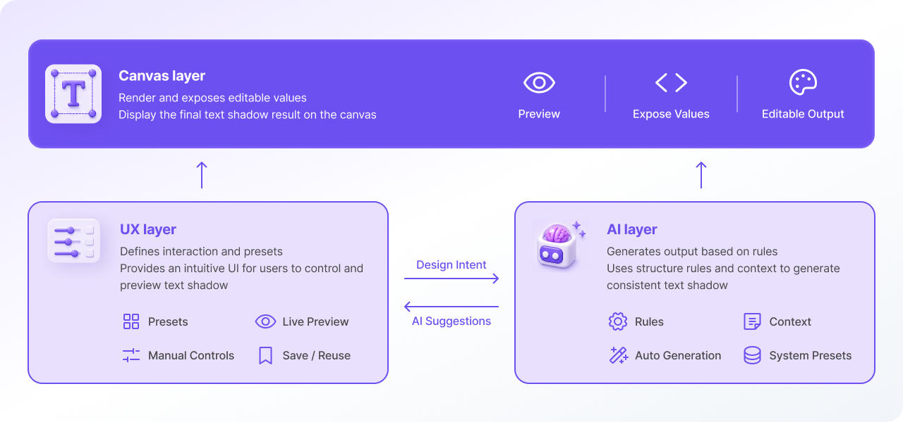

UX → AI
Design rules and presets define AI behavior.
- AI follows structured rules
- Outputs match manual design logic
Outcome: AI understands design intent, not only visual values.
A system layer connects UX logic, AI behavior, and canvas rendering. This ensures text shadow is consistent, editable, and usable in the product.
AI-generated text shadow was not always usable in real workflows.
Without a connection to the canvas:
A mapping layer connects UX logic, AI behavior, and canvas rendering.
Design rules and presets define AI behavior.
Outcome: AI understands design intent, not only visual values.
AI output is converted into renderable UI values before rendering.
Outcome: Users can inspect, edit, and trust the result.

Text shadow becomes:
AI output becomes valuable only when it works inside the product system.